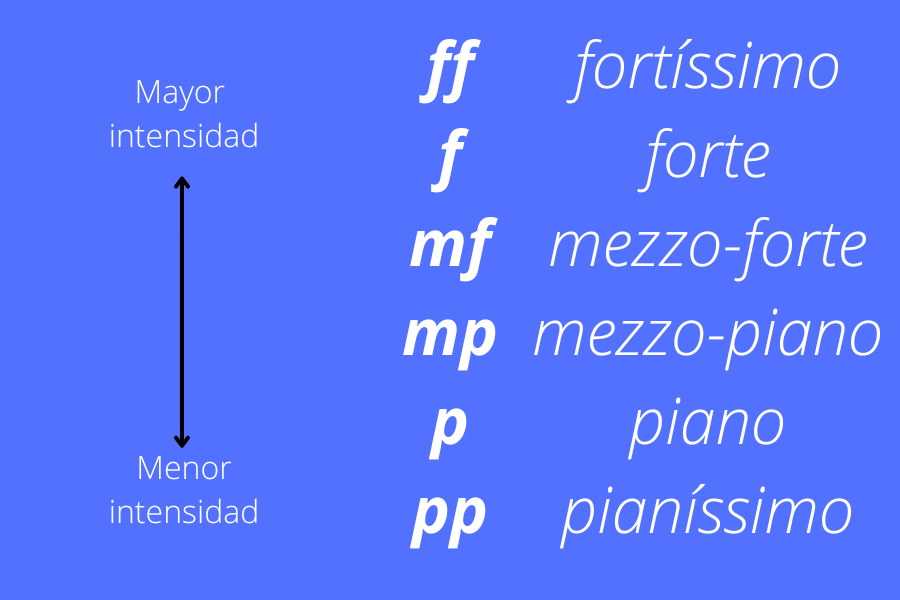
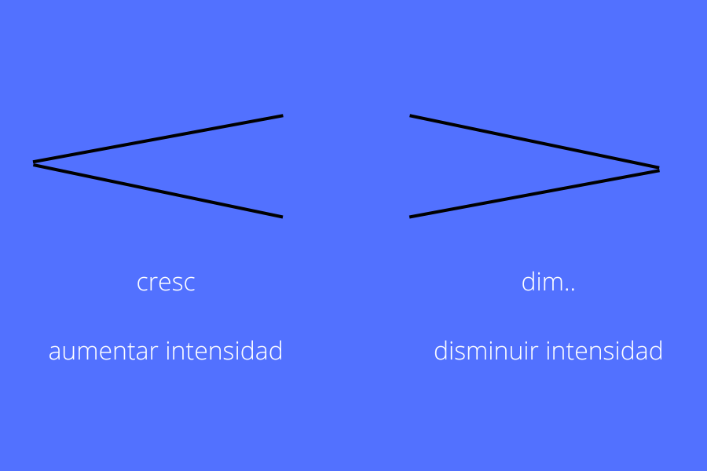
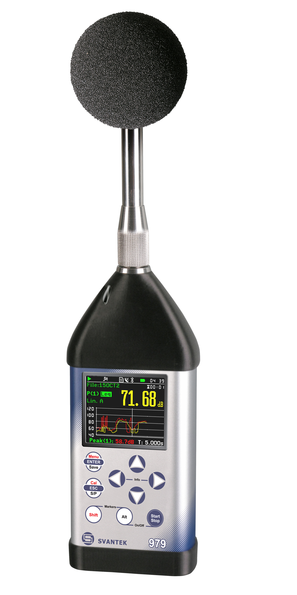

Fuerte - suave
Continuemos trabajando con el Bolero de Ravel. Escucha los siguientes pasajes seleccionados a continuación. Observa la gestualidad del director y la reacción de la orquesta para un análisis más profundo.
Escucha el fragmento que va desde el minuto 16:22 hasta el minuto 17:00.
Ahora el fragmento que va desde el segundo 00:10 hasta el minuto 1:16.
Responde:
1) ¿ En cuál de estos dos pasajes la orquesta suena más fuerte? ¿ Qué apreciaciones te llevaron a esa conclusión? Las indicaciones y expresiones del director de orquesta: ¿te ayudaron al momento de analizar este fragmento musical? ¿Por qué?
2) ¿En cuál de estos dos pasajes suena más suave? ¿Por qué? ¿Qué gestos e indicaciones realiza el director? ¿Son los mismos gestos que hace en el pasaje anterior? Explica.
De dos sonidos elegidos se puede decir que uno es más fuerte y el otro es más suave.
El primer sonido es más fuerte que el segundo:
Llamaremos intensidad a la cualidad del sonido que nos permite distinguir si un sonido es más o menos fuerte o suave. En una partitura aparece indicado cuando la orquesta debe sonar más fuerte o más suave en algún pasaje musical. Te mostraremos a continuación cómo aparecen escritos los indicadores de intensidad. Todos los términos están en italiano. Piano significa suave y mezzo significa medio. Forte significa fuerte. Veamos a continuación el recuadro.

También los reguladores o dinámicas de intensidad pueden aparecer escritos de esta otra forma:

Crescendo ( cuando el sonido crece y suena más fuerte) y diminuendo ( cuando el sonido disminuye de intensidad y suena más suave).
Mira y escucha esta versión de Bolero donde podemos ver la partitura que la orquesta interpreta y descubre que indicadores de intensidad son utilizados por el compositor.
La intensidad esta en función de la ampilutud cuando hablamos del fenómemo físico. Cuando el emisor vibra, la presión del medio que lo rodea aumenta y disminuye haciendo posible su vibración y su propagación. Cuanto mayor es la variación de presión, mayor es la amplitud. Existen varias maneras de medir la intensidad pero la más conocida es la que se mide en decibeles (dB) midiendo la el nivel de presión sonora. La manera de medir los decibeles es logarítmica para adecuarse los más posible a la precepción humana.
Así por ejemplo una conversación normal son 60dB y el sonido de una motosierra es de 110dB. El dispositivo para medir la intensidad se llama sonómetro y a continuación te dejamos el link para descargarlo en un celular y así descubir los niveles de intensidad de tu entrono.

Aplicación sonómetro para descargar:https://play.google.com/store/apps/details?id=com.gamebasic.decibel&hl=es_419&gl=US